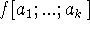

In what follows computation and mathematical logic will each be taken in a wide sense. The subject of computation is essentially that of artificial intelligence since the development of computation is in the direction of making machines carry out ever more complex and sophisticated processes, i.e. to behave as intelligently as possible. Mathematical logic is concerned with formal languages, with the representation of information of various mathematical and non-mathematical kinds in formal systems, with relations of logical dependence, and with the process of deduction.
In discussions of relations between logic and computation there has been a tendency to make confused statements, e.g. to say that aspect A of logic is identical with aspect B of computation, when actually there is a relation but not an identity. We shall try to be precise.
There is no single relationship between logic and computation
which dominates the others. Here is a list of some of the more
important relationships.
1. Morphological parallels
The formal command languages in which procedures are
described, e.g. ALGOL; the formal languages of mathematical logic,
e.g. first order predicate calculus; and natural languages to some
extent: all may be described morphologically (i.e., one can describe
what a Grammatical sentence is) using similar syntactical terms. In
my opinion, the importance of this relationship has been
exaggerated, because as soon as one goes into what the sentences
mean the parallelism disappears.
2. Equivalent classes of problems
Certain classes of problems about computations are equivalent to
certain classes of problems about formal systems. For example, let
E  be the class of Turing machines with initial tapes,
be the class of Turing machines with initial tapes,
E  be the class of formulas of the first order predicate calculus,
be the class of formulas of the first order predicate calculus,
E be the class of general recursive functions,
E be the class of formulas in a universal Post canonical system,
E be a class of each element which is a Lisp S-function f together with a suitable set of arguments
E be a program for a stored program digital computer.
About E  we ask: Will the machine ever stop?
we ask: Will the machine ever stop?
About E  we ask: Is the formula valid?
we ask: Is the formula valid?
About E we ask: Is f(0) defined?
About E we ask: Is the formula a theorem?
About E we ask: Is  defined?
About E we ask: Will the program ever stop?
For any pair (E ,E ) we can define a computable map that takes any one of the problems about elements of E into a corresponding problem about an element of E and which is such that the problems have the same answer. Thus, for any Turing machine and initial tape we can find a corresponding formula of the first order predicate calculus such that the Turing machine will eventually stop if and only if the formula is valid.
In the case of E if we want strict equivalence the computer must be provided with an infinite memory of some kind. Practically, any present computer has so many states, e.g. , that we cannot reason from finiteness that a computation will terminate or repeat before the solar system comes to an end and one is forced to consider problems concerning actual computers by methods appropriate to machines with an infinite number of states.
These results owe much of their importance to the fact that each of
the problem classes is unsolvable in the sense that for each class
there is no machine which will solve all the problems in the
class. This result can most easily be proved for certain classes
(traditionally Turing machine), and then the equivalence permits its
extension to other classes. These results have been generalized in
various ways. There is the world of Post, Myhill, and others, on
creative sets and the work of Kleene on hierarchies of
unsolvability. Some of this world is of potential interest for
computation even though the generation of new unsolvable classes of
problems does not in itself seem to be of great interest for
computation.
3. Proof procedures and proof checking procedures
The next relation stems from the fact that computers can be used to carry out the algorithms that are being devised to generate proofs of sentences in various formal systems. These formal systems may have any subject matter of interest in mathematics, in science, or concerning the relation of an intelligent computer program to its environment. The formal system on which the most work has been done is the first order predicate calculus which is particularly important for several reasons. First, many subjects of interest can be axiomatized within this calculus. Second, it is complete, i.e. every valid formula has a proof. Third, although it seems unlikely that the general methods for the first order predicate calculus will be able to produce proofs of significant results in the part of arithmetic axiomatizable in this calculus (or in any other important domain of mathematics), the development of these general methods will provide a measure of what must be left to subject-matter-dependent heuristics. It should be understood by the reader that the first order predicate calculus is undecidable; hence there is no possibility of a program that will decide whether a formula is valid. All that can be done is to construct programs that will decide some cases and will eventually prove any valid formula but which will run on indefinitely in the case of certain invalid formulas.
Proof-checking by computer may be as important as proof generation. It is part of the definition of formal system that proofs be machine checkable. In my forthcoming paper [9], I explore the possibilities and applications of machine checked proofs. Because a machine can be asked to do much more work in checking a proof than can a human, proofs can be made much easier to write in such systems. In particular, proofs can contain a request for the machine to explore a tree of possibilities for a conventional proof. The potential applications for computer-checked proofs are very large. For example, instead of trying out computer programs on test cases until they are debugged, one should prove that they have the desired properties.
Incidentally, it is desirable in this work to use a mildly more general concept of formal system. Namely, a formal system consists of a computable predicate
of the symbolic expressions statement and Proof. We say that Proof is a proof of statement provided
has the value T.
The usefulness of computer checked proofs depends both on the development of types of formal systems in which proofs are easy to write and on the formalization of interesting subject domains. It should be remembered that the formal systems so far developed by logicians have heretofore quite properly had as their objective that it should be convenient to prove metatheorems about the systems rather than that it be convenient to prove theorems in the systems.
4. Use of formal systems by computer programs
When one instructs a computer to perform a task one uses a sequence of imperative sentences. On the other hand, when one instructs a human being to perform a task one uses mainly declarative sentences describing the situation in which he is to act. A single imperative sentence is then frequently sufficient.
The ability to instruct a person in this way depends on his possession of common-sense which we shall define as the fact that we can count on his having available any sufficiently immediate consequence of what we tell him and what we can presume he already knows. In my paper [10] I proposed a computer program called the Advice Taker that would have these capabilities and discussed its advantages. The main problem in realizing the Advice Taker has been devising suitable formal languages covering the subject matter about which we want the program to think.
This experience and others has led me to the conclusion that mathematical linguists are making a serious mistake in their almost exclusive concentration on the syntax and, even more specially, the grammar of natural languages. It is even more important to develop a mathematical understanding and a formalization of the kinds of information conveyed in natural language.